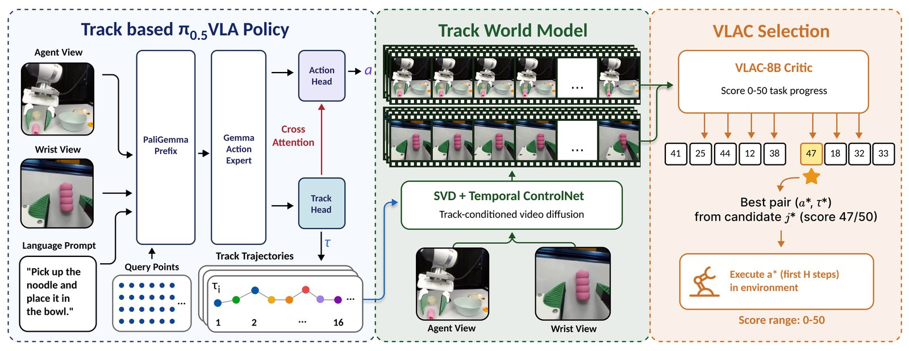
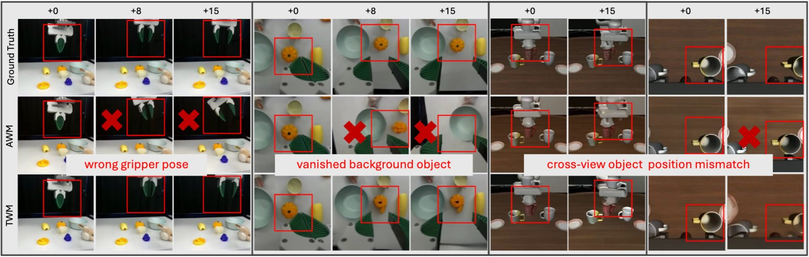
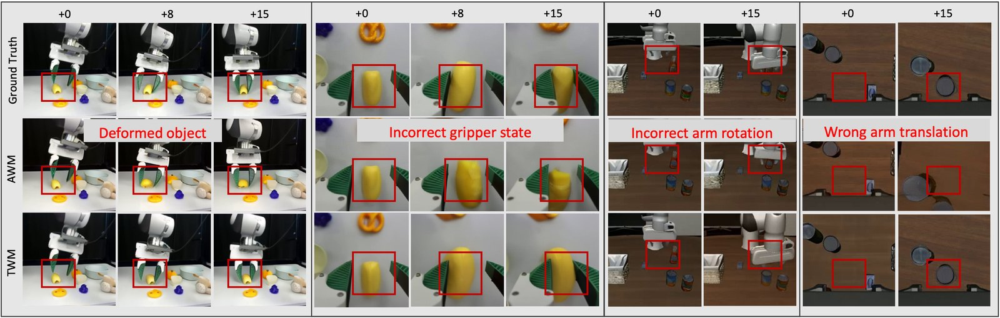

Robot actions are inherently embodiment-specific and only weakly aligned with image-space visual changes, limiting their effectiveness as conditioning signals for robot world models. In contrast, visual tracks provide an embodiment-agnostic representation of how task-relevant points move through a scene, offering dense image-space guidance for accurate and spatially precise future video prediction. Building on this observation, we propose TrAct, a world-model-based robot decision-making framework that uses visual tracks as an intermediate interface between control and prediction. TrAct consists of three components: a Vision-Language-Action-and-Track model (VLAT) that jointly predicts candidate actions and corresponding visual tracks from the current observation and language instruction; a track-conditioned world model (TWM) that predicts future visual outcomes conditioned on the proposed tracks; and a vision-language reward model (VLAC) that scores the predicted outcomes. At inference time, VLAT generates candidate action-track pairs, TWM rolls out their visual consequences, and VLAC selects the track whose predicted outcome best satisfies the instruction; the action paired with the selected track is then executed by the robot. Experiments on the proposed LIBERO-INTEGRAL benchmark and real-world Franka manipulation show that TrAct improves success rates from 27% to 55% in simulation and from 49% to 76% on real-world tasks compared with the strong VLA baseline π0.5. Furthermore, TWM consistently improves video prediction quality over the action-conditioned world model (AWM). These results demonstrate that visual tracks provide an effective shared interface between robot control and visual prediction, enabling more accurate world modeling and stronger robot generalization.

Overview of the TrAct framework. Given an observation and a language instruction, the vision-language-action-and-track model jointly predicts K candidate actions and their corresponding visual tracks. Each set of predicted tracks conditions a world model to generate future video frames. A vision-language-action critic scores the predicted outcomes and selects the action whose rollout best fits the instruction.
We compare two world models that differ only in what they condition on: the track-conditioned world model (TWM), which is guided by the predicted point tracks, and the action-conditioned world model (AWM), which is guided by the raw robot action chunk.


The track-conditioned model produces more spatially accurate and motion-coherent frames than the action-conditioned one across both agent-view and wrist-view cameras. The action-conditioned model often exhibits incorrect gripper poses, disappearing objects, spatial drift, and cross-view object position inconsistencies, especially in wrist view.
Action-conditioned (AWM) vs. track-conditioned (TWM) world models. ↑ higher is better, ↓ lower is better.
| Metric | Real / Agent | Real / Wrist | Sim / Agent | Sim / Wrist | ||||
|---|---|---|---|---|---|---|---|---|
| AWM | TWM | AWM | TWM | AWM | TWM | AWM | TWM | |
| PSNR ↑ | 20.70 | 21.27 | 16.89 | 20.62 | 15.12 | 24.51 | 16.25 | 22.71 |
| SSIM ↑ | 0.767 | 0.802 | 0.621 | 0.738 | 0.482 | 0.843 | 0.668 | 0.822 |
| LPIPS ↓ | 0.126 | 0.111 | 0.372 | 0.225 | 0.438 | 0.106 | 0.452 | 0.182 |
| FID ↓ | 105 | 95 | 176 | 130 | 248 | 156 | 222 | 92 |
| FVD ↓ | 148 | 105 | 246 | 140 | 129 | 38 | 207 | 162 |
Rollouts on the physical Franka, overlaid with the visual tracks predicted at each step. The top row runs on the training background and the bottom row on an unseen background.
Rollouts in LIBERO simulation, overlaid with the visual tracks predicted at each step (agent view on the left, wrist view on the right; red marks the current position and blue the predicted future). The first is a standard LIBERO task; the remaining three are our generalization settings—a shifted camera pose, a cross-embodiment UR5e arm, and a different robot initial pose.
All variants share the same candidate generator and the same critic. They differ in the policy that proposes candidates, and in what the world model conditions on.
Each adjacent pair isolates one factor:
Average success rate
By variation category
Average success rate
By task
By background
LIBERO-INTEGRAL combines robustness variations from LIBERO-PRO and LIBERO-Plus with cross-embodiment transfer to a UR5. Scores are average task success rates.
| Method | Swap | Object | Task | Camera | RobotInit | Cross-Emb. | Avg. |
|---|---|---|---|---|---|---|---|
| π0.5 | 0.40 | 0.35 | 0.15 | 0.45 | 0.45 | 0.17 | 0.27 |
| VLAT | 0.50 | 0.40 | 0.35 | 0.45 | 0.55 | 0.42 | 0.44 |
| VLAT + AWM | 0.65 | 0.50 | 0.50 | 0.45 | 0.55 | 0.44 | 0.49 |
| TrAct | 0.65 | 0.60 | 0.50 | 0.60 | 0.65 | 0.50 | 0.55 |
Success rates on five unseen Franka manipulation tasks, each evaluated under the regular training background (R) and a visually distinct background (D).
| Task | Bg. | π0.5 | VLAT | VLAT+AWM | TrAct |
|---|---|---|---|---|---|
| Green block in bowl | R | 0.5 | 0.6 | 0.7 | 0.7 |
| D | 0.4 | 0.4 | 0.5 | 0.7 | |
| Half pink noodle in bowl | R | 0.6 | 0.8 | 1.0 | 1.0 |
| D | 0.6 | 0.6 | 0.8 | 0.8 | |
| Hotdog bun in bowl | R | 0.6 | 0.6 | 0.8 | 0.8 |
| D | 0.4 | 0.5 | 0.6 | 0.6 | |
| Close the cabinet door | R | 0.5 | 0.5 | 0.6 | 0.8 |
| D | 0.3 | 0.4 | 0.4 | 0.7 | |
| Pour pasta into the pan | R | 0.5 | 0.6 | 0.7 | 0.8 |
| D | 0.5 | 0.5 | 0.5 | 0.7 | |
| Average | 0.49 | 0.55 | 0.66 | 0.76 |